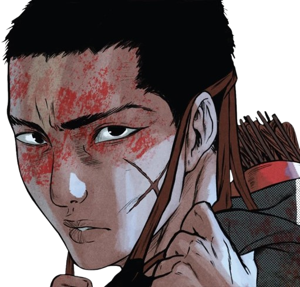

Joui Jouki
Joui Jouki é um agente da Ordo Realitas que decidiu adaptar seus métodos após uma primeira missão traumática.
Ele é um guerreiro de corpo e alma, treinando a sua vida toda para proteger aqueles que ama, cogitando se sacrificar
pelos que quer proteger.
Joui Jouki no começo de sua aventura, ainda sem noção de tudo que iria passar

Joui Jouki em sua segunda missão, após perceber que talvez seus esforços não seriam o suficiente
Joui Jouki ao se sacrificar para a Seita das Mascaras em troca de salvar seus amigos
Joui Jouki após ser libertado da Seita das Mascaras pelo próprio Diabo para impedir a Calamidade